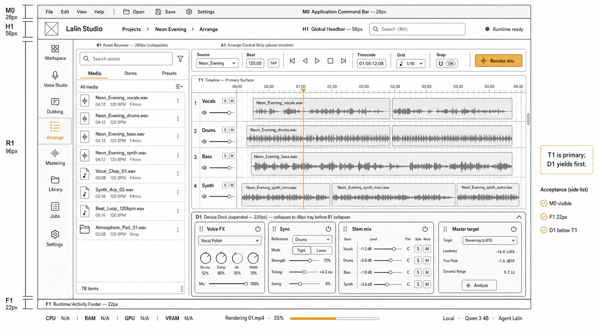
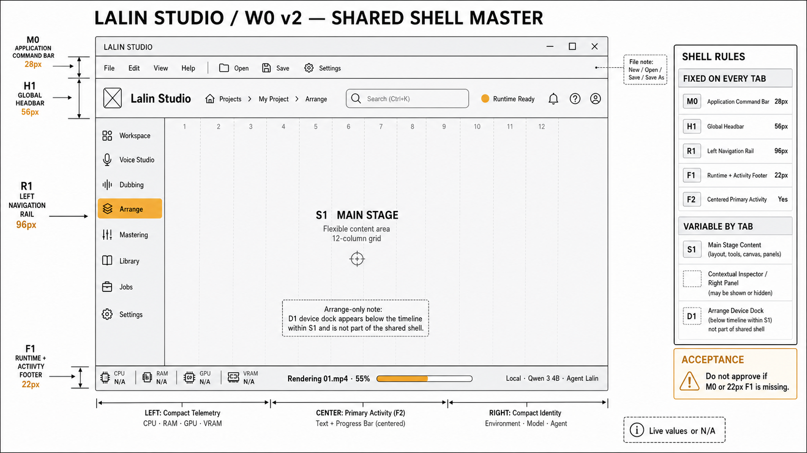
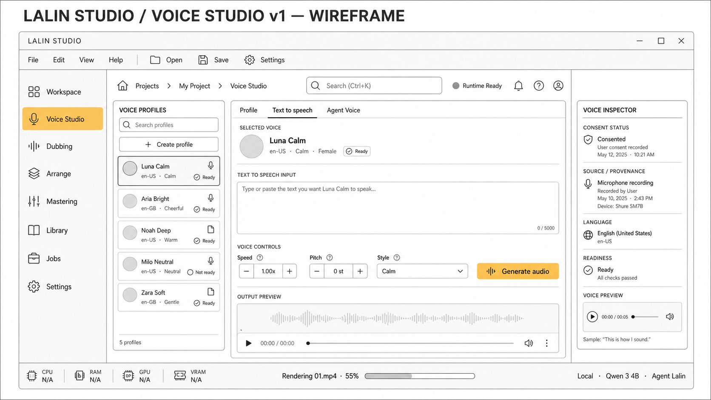

Voice profiles + TTS
Create consented local voice profiles, generate Thai/English speech, and route Agent Voice through selected profiles.
Lalin Studio is a Windows desktop workstation for voice profiles, Thai-first TTS, dubbing, mastering, and timeline Arrange workflows. It is built for creators who want local GPU control, privacy, and repeatable project work instead of another cloud-only tab.

One desktop workspace for audio generation and finishing, with explicit boundaries between shipped runtime, validated prototype, and mockup.
Create consented local voice profiles, generate Thai/English speech, and route Agent Voice through selected profiles.
ASR, translation, voice assignment, timing review, and export through background jobs.
Suno/demo-song finishing lane: source, beat, timeline edit, device dock, render, export.
Reference or automatic LUFS mastering with output through the same job and file system.
These are approved design mockups/reference screens for the Lalin Studio shell and major tabs. They are presentation mockups, not all shipped UI states.


Use this table when presenting. It separates what is real now from what should be shown as planned/mockup.
GitHub repo renamed to Lalin-AI. Root workspace, contracts package, MCP server, release workflow path repair, and docs SOT are implemented.
React/Tauri desktop, FastAPI backend routes, runtime telemetry, jobs, TTS, dubbing, mastering, Arrange, and MCP contracts exist in code.
Approved W0 and tab mockups exist. Treat visual polish and full tab parity as design-approved implementation work, not fully shipped UI.
An unsigned NSIS installer exists and passed an isolated install/runtime smoke with the full-profile sidecar. Signed release and clean-VM acceptance remain pending.
Ollama/provider abstraction and local-first runtime design are documented. Heavy ML deps remain lazy/optional for practical startup.
This page is a local presentation landing page. Publish/download automation can be the next release gate after installer build is stable.
Recommended order for an internal presentation: show this page, open the repo, then run the local app if the machine is ready.
Use this if installer is not ready. It exercises the real desktop frontend build path and FastAPI backend.
cd D:\G-Music
npm run check:all
cd D:\G-Music\apps\api
..\..\backend\.venv\Scripts\Activate.ps1
uvicorn app.main:app --port 8756
cd D:\G-Music\apps\desktop
npm run dev
Local artifact path after the package build:
apps/desktop/src-tauri/target/release/bundle/nsis/G-Music_0.1.0_x64-setup.exe
This is unsigned local evidence; signed release and clean-VM acceptance remain separate gates.